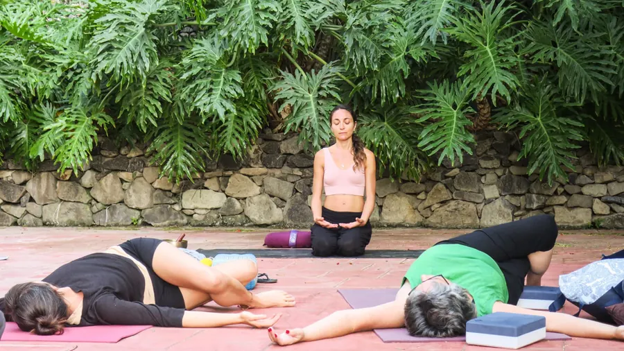
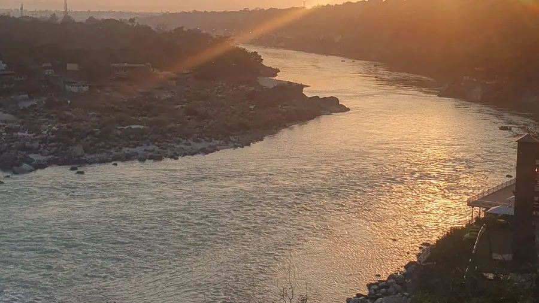
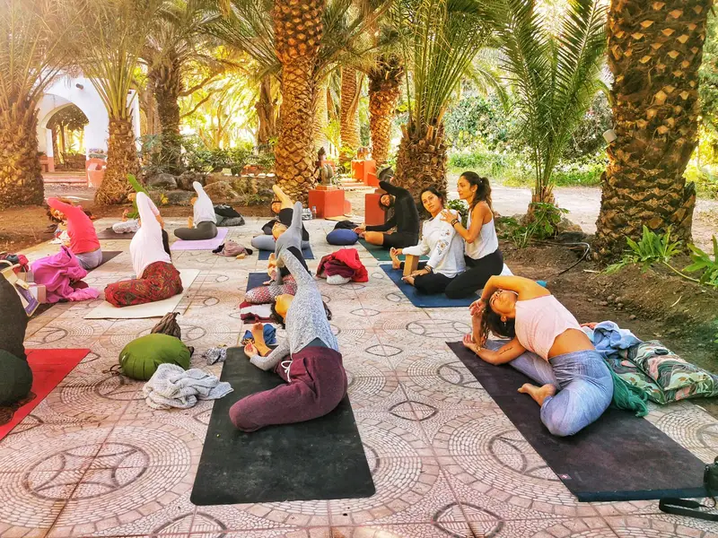
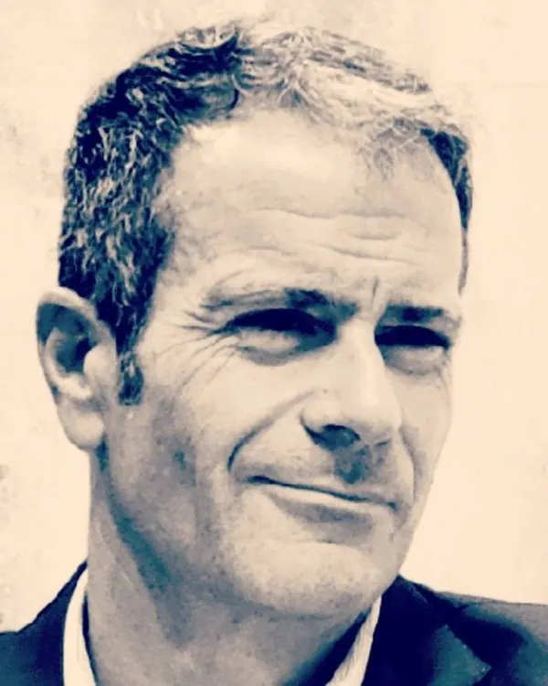
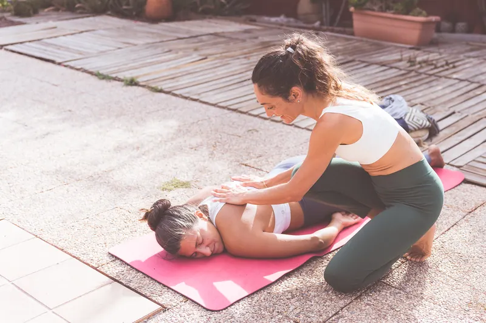
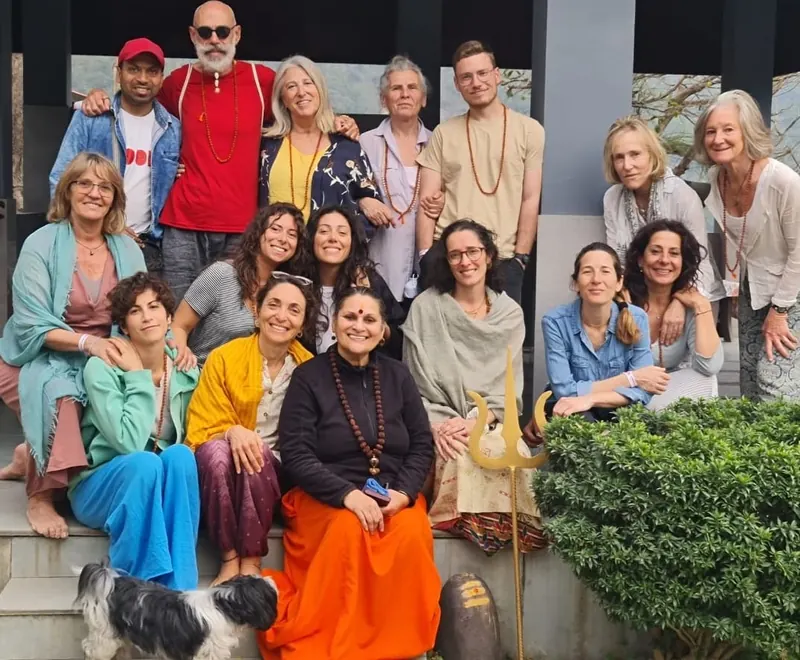
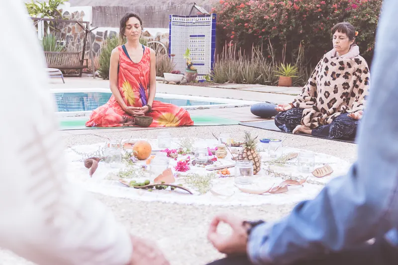
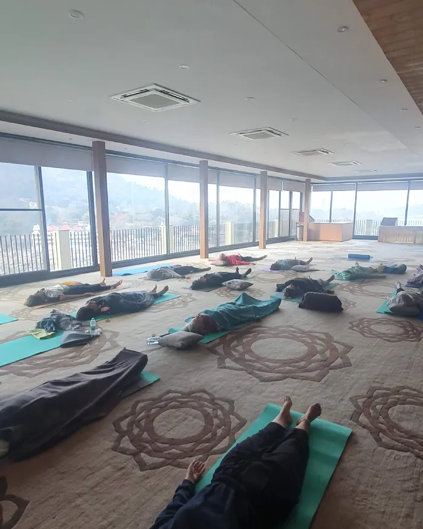

The last journey
of the ego
An awakening to our identity, fears and beliefs, to look within and open up to a deeper recognition of who we are.
It is not about gathering knowledge or adopting new beliefs. It is about looking, questioning, experiencing and opening up to recognise what is already there.
El Último Viaje del Ego was born from the meeting of Melania Di Vara and Miquel Canut, both with a long path in personal growth. Through retreats, online courses and guidance, we invite you to question what we have identified with and to come home: to your true Self.
You don't need any previous experience of yoga, meditation or spiritual paths. Only the wish to stop, go deeper into yourself and explore a different way of relating to your own life experience.
Landscapes, culture and tradition
We don't simply visit places; we live them as a space for exploration and transformation.
Observe, question and let go
A chance to let go of some of the identities, stories and conditioning we live from, and to connect with your Self, with worthiness and self-value.
Retreats and paths to come back to yourself

Pre-registration openIndia: Rishikesh, Ganges, Himalayas
Two weeks of culture, spirituality, personal growth workshops, yoga and meditation in the heart of India.
Discover the retreat Online
OnlineComing Home. The Journey of the Ego
A space for inner exploration and practice, to understand more truly who you are beyond your thoughts, emotions and stories.
See the course
Retreats and eventsCatalonia and the Canary Islands
As well as India, we hold retreats and events in Catalonia and the Canary Islands. Write to us and we'll tell you the next dates.
See whereTools for exploration and transformation
Meditation
Returning to presence and inner silence.
Breathwork
To regulate, ground and release.
Movement
The body as a path of awareness.
Self-observation
Looking honestly at what we believe we are.
Group work
Hearing yourself in others and letting yourself be seen.
Workshops
Guided self-knowledge work.
Melania Di Vara and Miquel Canut

Melania Di Vara
Yoga, Meditation and Ayurveda teacher trainer with more than 10 years of experience guiding processes of self-knowledge and emotional healing. She leads retreats and immersions in India and Europe.
Meet Melania
Miquel Canut
Therapist and Life Coach with more than 18 years of experience. He guides processes of personal growth and inner transformation, integrating different disciplines.
Meet Miquel




People who have already travelled with us
I joined a trip to northern India organised by Melania. It was an incredible experience. We visited several of the sacred cities on the Ganges and in the last week we enjoyed the International Yoga Festival in Rishikesh. Everything was superbly organised: hotels, visits, transfers.
Every retreat she organises is pure alchemy: if you just put in a little of yourself, I promise they are transformative and won't leave you indifferent. In my case it helped me shed a lot of weight I was carrying.
I had the chance to travel to India with Melania and share her yoga classes. An experience to remember! Thank you.
Real testimonials published on melaniadivara.com about Melania's trips and retreats (translated from Spanish).
Perhaps the search is always the same: coming home
Write to us and we'll take the time to tell you which offering might resonate with you.